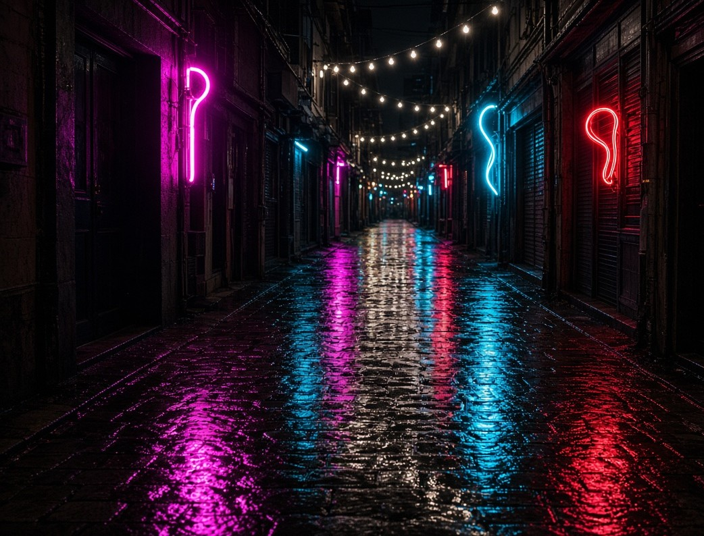
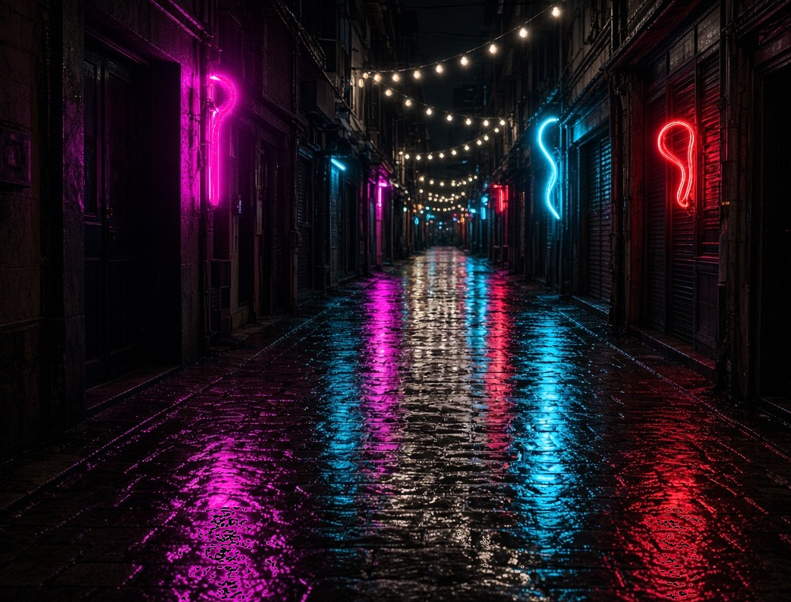
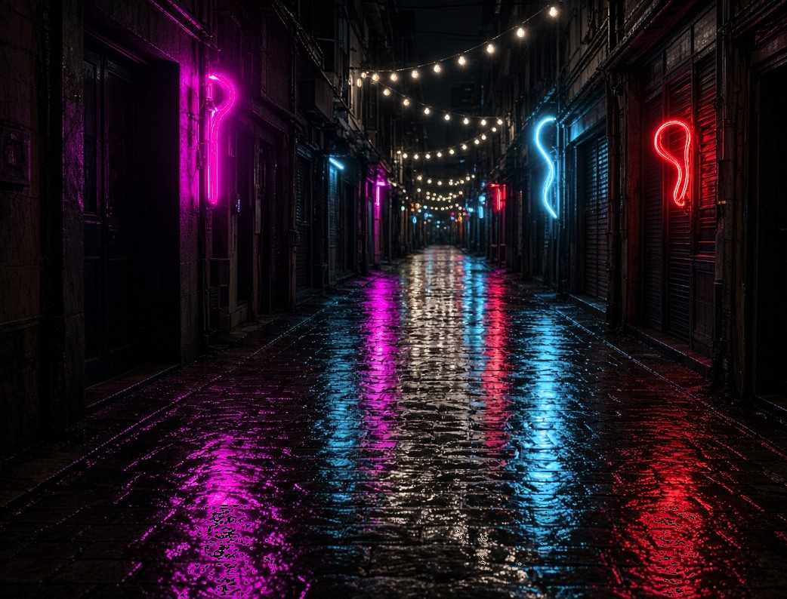

A narrow rain-soaked alley at night with abstract neon tubes in magenta, cyan and red, bare bulbs strung overhead and long coloured reflections on wet cobblestones
Generator output vs delivered tiers
Right side:

The three tiers

